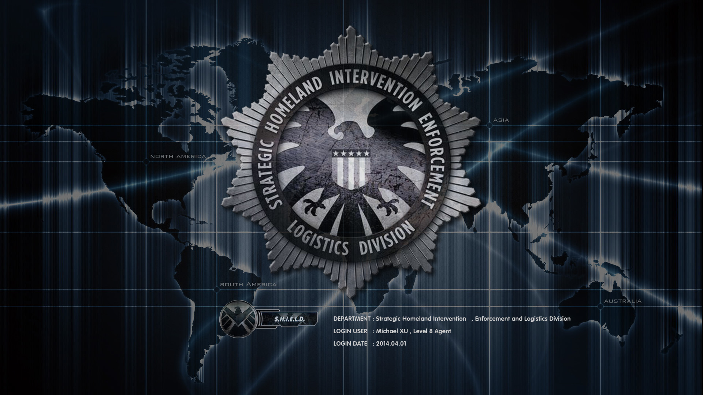

神盾局
神盾局
全称为国土战略防御攻击与后勤保障局。是Marvel漫画中的组织，首次登场与《奇异故事》第135期（1965年8月），由斯坦·李与杰克·科比联合创造。
神盾局是国际安全理事会专门用于处理各种奇异事件的特殊部队，漫画里前任局长为尼克·弗瑞（Nick Fury），现任指挥官为玛丽亚·希尔（Maria Hill），
电影中前局长为尼克·弗瑞（Nick Fury），现任代理局长为菲尔·科尔森（Phil Coulson），在《美国队长2》里神盾局被九头蛇渗透。神盾局帮助钢铁侠组建了
由众多超级英雄组成的复仇者联盟。主要对手为远古时期异人创建后来在二战时期由红骷髅用德国纳粹资金组建并延续至今的秘密恐怖组织九头蛇。